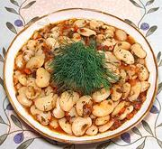

|
Lima Bean PlakiGreek - Lopia Plaki | ||||
| Makes: Effort: Sched: DoAhead: |
3-3/4 # *** 2+ hrs Yes |
An excellent side, appetizer, or vegetarian main dish. This recipe is similar to the canned "Giant White Beans" from Bulgaria and Turkey, but costs less and tastes better. | |||
| Plaki is a traditional cooking method for vegetables in an aromatic sauce, which now always includes tomatoes. Lima beans are native to Central and South America, but have been adopted worldwide. | |||||
|
1 ----- 5 2 3 2 1/2 1 ----- 2 2 2 2 1/3 2 1 1/3 ----- 2 ar |
# --- oz cl oz oz c --- c T c c t t --- T |
Lima Beans, dry (1) -- Onion mix Onions Garlic Carrots Celery Parsley Leaf Bay Leaf -- Tomato mix Tomatoes, canned Dill, fresh Thyme sprig Oregano sprig Lemon Juice Stock (2) Salt Pepper -------------- Olive Oil ExtV Water |
DoAhead - (9-1/2 hrs - 5 min work)
|